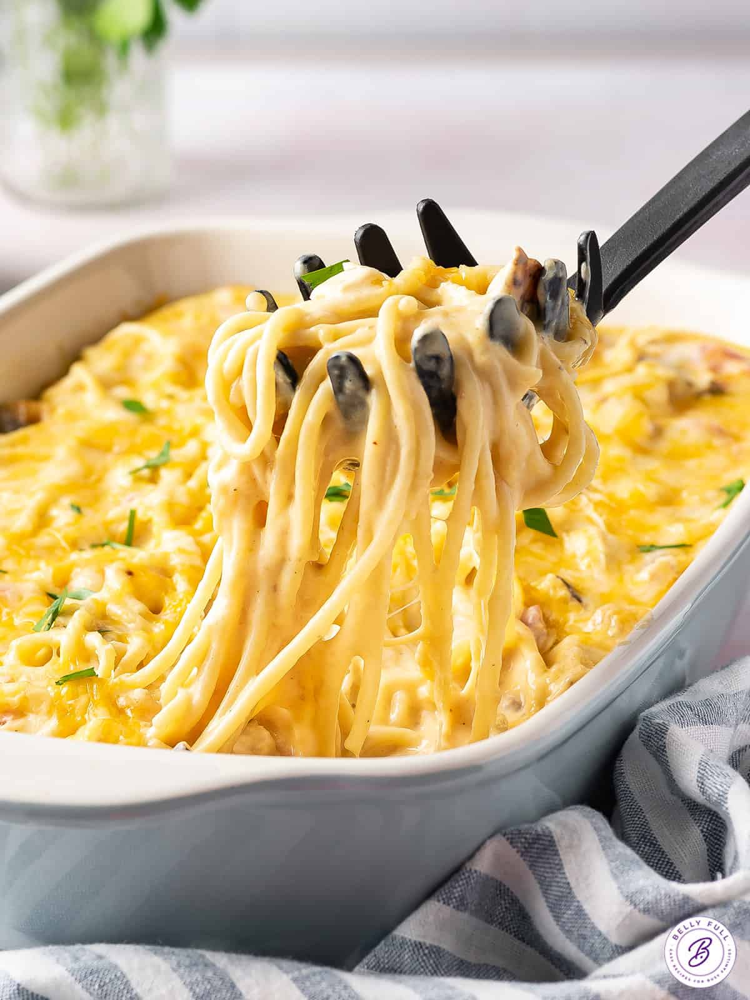

Chase's Classic Cheesy Chicken Spaghetti

A Little History
Well, not much to tell, really. The family wanted CCS one night, so i started looking up recipes. In my classic Cheesy Chicken Spghetti is just a few things- Velveta, Chicken, Rotel, & Spaghetti noodles. Starting from that, I added a few things of my own to take it up a notch. Check it out.
Ingredients
- 1 Box of Angel Hair Spaghetti noodles
- 1 Box of Velveta Cheese
- 1 Can of Rotel Tomatoes
- 2 8 oz chicken breasts, shredded
- 1/2 of a Diced Onion
- 1 tsp of Ranch Seasoning
Instructions
- Begin by Boiling Spaghetti in Broth from Boilded chicken
- Mix Cheese, Rotel, Chicken, Ranch & Onions
- Fold In Noodles
- Bake at 375 Degrees for 20 minuts
Home